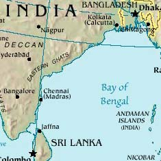

2.2 The Geographical and Historical Context of Hinduism
Do you think our culture, particularly urban, with its current values and lifestyle has the stability to last unchanged for 2500 years? What impact has the industrialization and electronification of the world had on this possibility? What impact has the instant wealth of information through the internet and participation in a global economy had on our worldview?
The geographically protected location of the Indian subcontinent has had a significant influence on the anthropological and religious history of the country. As you can see from the map, it is protected on the north by high mountains and on the south and both sides of the continent by the vast Indian Ocean. Although invaders have come through the mountain passes, they have been limited in the size of their invading forces by both the difficulty of the passes and the extreme desserts through which they had to pass. Among all the invaders, Persians, Greeks, Scythians, Huns and Mongols, the Aryans are the only ones who penetrated the land sufficiently to have had a profound and lasting effect on Indian culture. Theirs was a nomadic warrior, patriarchal society. It is not known whether they invaded the existing Harrapan culture swiftly or over a period of many centuries.
One major impact of their presence was the imposition of a class system of priests, warriors and commoners, with the conquered people becoming a class beneath these. Since India is so large, and predominantly a country of village culture, the way of life has basically remained the same for thousands of years.

So India, not only isolated from other cultures, but resistant and most of whose population identified with embedded Hinduism, remained stable and unchanging for thousands of years.
Contemplate the geographic context of the United States. We, too, are protected by vast oceans on the East and West. We also have non aggressive neighbors to the north and south. In the course of our history, we maintained many decades of intentional isolation. Founded on religious immigration from different countries, we continue to integrate diverse populations of immigrants into our culture, with only limited subtle impact on the character of the melting pot, until recently. Currently, Latino immigration has reached major proportions and has started to have significant impact, for instance, the escalation of needing to be bilingual in social services, education, etc. Buddhism and Taoism have contributed interest in martial arts, meditation, oriental healing systems such as chi kong and acupuncture, and herbal medicine; Hinduism has contributed various forms of yoga. We have never been united by a common religion.